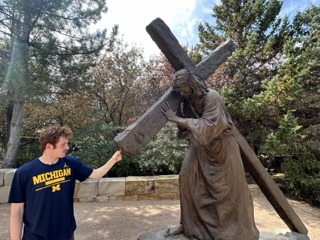

Bryce Petrovay | WDD 130
Name: Bryce Petrovay
Height: 6'3
Weight: 160lbs
Age: 21
Girlfriend: Non-Existent
Meet the quintessential Brummie adventurer: a proud graduate of Plantsbrook School, where he mastered the fine art of dodging puddles and perfecting the “Walsall College Smile.” With a certificate in Mechanical Engineering that practically screams “I can fix your radiator and still have time for a cheeky Nando's,” he recently wrapped up his full-time missionary service for the Church of Jesus Christ of Latter-day Saints in the wilds of Scotland and Ireland—where he bravely navigated the treacherous terrain of haggis and deep-fried everything. This aspiring American expatriate is on a quest to escape the drizzle of Birmingham for the sun-soaked shores of the States, convinced that a life of burgers and baseball is just around the corner. He dreams of building machines that could one day help him achieve his ultimate goal: perfectly replicating a classic American diner experience—complete with jukebox and all-you-can-eat pancakes. Armed with an engineering degree and an arsenal of terrible puns, he’s ready to take on the world, one fried food item at a time. Who knows? Maybe he’ll even convince the Americans that British cuisine is more than just tea and biscuits. Spoiler alert: it isn’t!